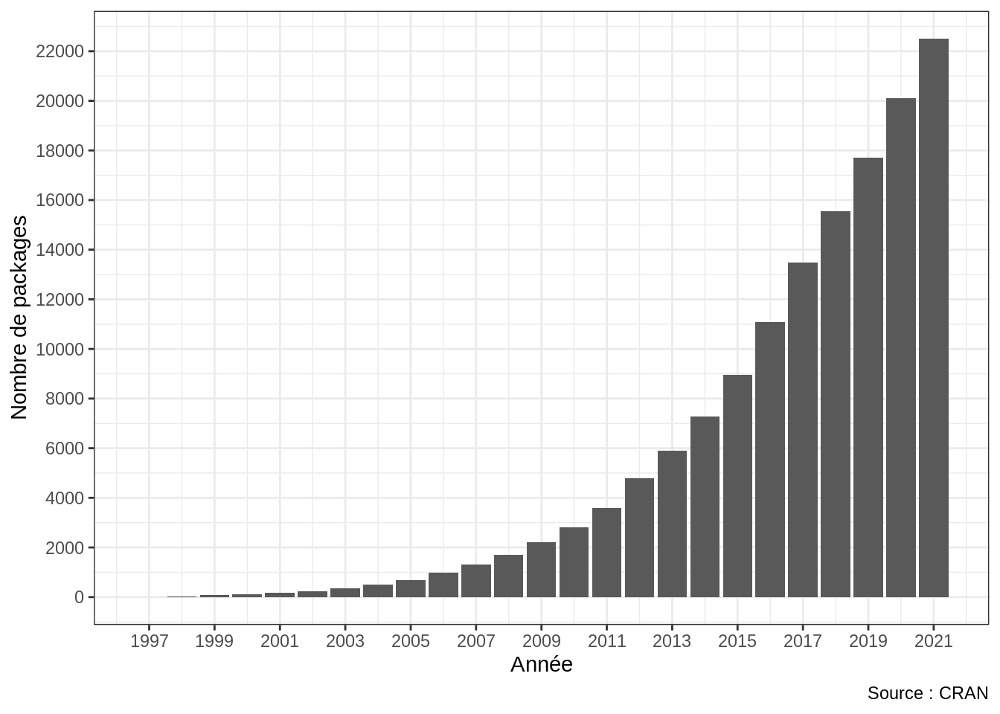
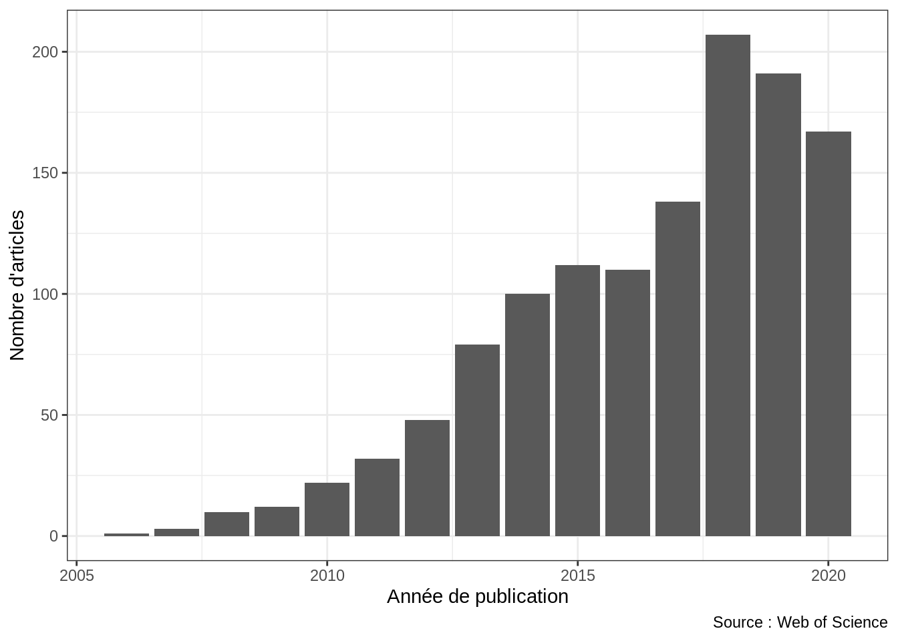

Introduction
Pourquoi travailler avec R ?
- R est libre et gratuit
- Le développement de R a débuté en 1991 à l’initiative de Ross Ihaka et Robert Gentleman au sein du département de statistiques de l’université d’Auckland (Nouvelle-Zélande). En 1995 la première version officielle est publiée et R devient un logiciel libre, distribué sous licence GNU. Le code source de l’ensemble du système R est ainsi accessible à tous, en garantissant quatre libertés essentielles :
- La liberté de faire fonctionner le programme comme vous voulez, pour n’importe quel usage (liberté 0) ;
- La liberté d’étudier le fonctionnement du programme, et de le modifier pour qu’il effectue vos tâches informatiques comme vous le souhaitez (liberté 1) ; l’accès au code source est une condition nécessaire ;
- La liberté de redistribuer des copies, donc d’aider les autres (liberté 2) ;
- La liberté de distribuer aux autres des copies de vos versions modifiées (liberté 3) ; en faisant cela, vous donnez à toute la communauté une possibilité de profiter de vos changements ; l’accès au code source est une condition nécessaire.
- R est modulable
- Les libertés offertes par la licence GNU et la structure modulaire de R permettent à toute personne de développer des extensions (appelées packages) et de les mettre à disposition de la communauté des utilisateurs. De nombreux packages fournissent des interfaces entre le langage R et d’autres langages ou logiciels libres, ce qui en fait un outil polyvalent, une passerelle permettant d’utiliser de nombreuses méthodes et algorithmes spécialisés. Ces packages peuvent être publiés et installés depuis le Comprehensive R Archive Network21 (CRAN) qui distribue également le code source de R et sa documentation. Fin 2021, plus de 22500 packages étaient disponibles sur le CRAN (fig. 0.1).

Figure 0.1: Évolution du nombre de packages disponibles sur le CRAN par année. Cette croissance exponentielle n’est pas sans poser de question quant au futur du CRAN.22
- R facilite la reproductibilité
- R est un langage de programmation qui fonctionne à l’aide de scripts. Ces scripts permettent de définir une suite d’instructions à exécuter et contiennent ainsi l’ensemble des étapes de l’analyse. Il est possible de modifier ou de rééxecuter une analyse pour mettre à jour des résultats ou de réutiliser un même script avec des données différentes. Ces scripts peuvent être archivés, partagés, soumis à l’examen des pairs et publiés au bénéfice d’une science ouverte, transparente et reproductible.
R s’est ainsi progressivement imposé comme un outil de référence pour l’analyse de données dans de nombreuses disciplines, notamment en archéologie (fig. 0.2). Si l’apprentissage du langage peut paraître difficile pour qui n’a jamais programmé, R bénéficie d’une communauté très active d’utilisateurs, de contributeurs et de développeurs. La documentation est abondante et il est toujours possible de trouver de l’aide en ligne.
Enfin, l’usage de R, comme de tout autre langage des programmation, conduit très souvent à généraliser un cas particulier. C’est ainsi un très bon moyen pour améliorer sa réflexion et, éventuellement, revoir la façon dont les problèmes sont posés.

Figure 0.2: Nombre d’articles d’archéologie citant R publié chaque année.23
Ressources complémentaires
Utiliser R
En complément de la documentation officielle pour démarrer avec R et comprendre la structure des données, il existe de très nombreux ouvrages dont la plupart sont consultables en ligne. R in a Nutshell de Joseph Adler24, Hands-On Programming with R de Garrett Grolemund25 et R cookbook de J. D. Long26 couvrent les usages élémentaires du langage (plus qu’ils ne sont traités ici) et sont d’une aide précieuse pour un usage courant.
L’ouvrage de référence de Paul Murrell27, R graphics, offre une vue d’ensemble des fonctionnalités graphiques de R et de leur usage avancé. R Graphics Cookbook28 constitue également une référence indispensable et fournit des recettes clé en main pour la création de graphiques. Quiconque s’attachant à la visualisation de données consultera avec intérêt Fundamentals of Data Visualization de Claus O. Wilke29.
L’utilisateur confirmé trouvera dans les ouvrages Advanced R30 et Efficient R programming31 de quoi approfondir sa compréhension du langage et développer sa pratique. R packages de Hadley Wickham32 est l’ouvrage idéal pour tout utilisateur souhaitant écrire son premier package et se former aux outils de développement (devtools, roxygen2, testthat…)33.
Quelques ouvrages thématiques susceptibles d’intéresser l’archéologue34 :
- Comprendre et réaliser les tests statistiques à l’aide de R,35 un ouvrage détaillé expliquant comment choisir un test statistique et présentant toutes les subtilités.
- Geocomputation with R,36 un livre sur l’analyse, la visualisation et la modélisation des données géographiques.
- Text Mining with R,37 un livre sur l’analyse textuelle avec R.
Enfin, on trouvera sur R-bloggers (un agrégateur de blogs) l’actualité du langage et de nombreux tutoriels.
Le site collaboratif Rzine a pour objectif de favoriser la diffusion et le partage de connaissances sur la pratique de R en SHS :
Rzine.fr s’efforce de dessiner les contours de la communauté R en SHS. Il donne aux débutant·e·s un accès simple à l’information et orienté vers une utilisation autonome. Il offre aux utilisateur·rice·s de niveau intermédiaire la possibilité d’étendre leurs pratiques et de s’ouvrir à d’autres méthodes parfois issues d’autres disciplines. Enfin, il s’agit d’un espace de diffusion pour les utilisateur·rice·s avancé·e·s, auteur·e·s de développements ou de documentation. — Rzine
Rzine recense de nombreuses ressources, fiches et manuels, open source et rédigés en français. Le site du projet permet également suivre l’actualité du langage et des évènements liés à la pratique de R en SHS.
Pour aller plus loin
Si les enjeux de reproductibilité et de science ouverte vous intéressent, il vous faudra sans doute compléter votre maîtrise de R par des outils supplémentaires, notamment les logiciels de contrôle de version.38
Le tidyverse est un ensemble de packages partageant “une philosophie de conception, une grammaire et des structures de données” dont les principes sont détaillés par Hadley Wickham et al.39 Tout comme le tidyverse revendique un “parti pris” (opinionated), ce livre revendique un choix : celui de ne pas utiliser les packages du tidyverse, malgré leur popularité au sein de la communauté des utilisateurs de R.
Ce choix repose sur un constat simple : l’usage de ces packages tend à considérablement complexifier l’apprentissage de R par les débutants et à les enfermer dans un écosystème particulier. Au contraire, l’utilisateur qui maîtrise les bases de R peut faire face à une multitudes de situations (il s’agit ici d’apprendre les bases d’un langage, plutôt que celles d’un dialecte particulier40).
Ceci étant dit, le lecteur qui le souhaite trouvera dans Introduction à R et au tidyverse,41 R for Data Science42 et STAT 54543 une introduction à l’analyse de données avec les packages du tidyverse.